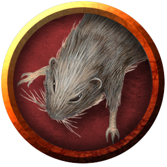

Rats
The everpresent vermin, in all their twisted glory.
Jump to: Rat | Swarm of Rats | Giant Rat | Withered Rat
Vectors of Disease. Some rats (giant or otherwise) carry vile diseases that they spread with their bites. A diseased rat's challenge rating does not change; a diseased giant rat has a challenge rating of 1/8 (25 XP) both have the following action instead of the normal Bite attack. (Note that the statistics for the Bite do not change other than to add the check for disease.)
Bite. Melee Weapon Attack: +4 to hit, reach 5 ft., one target. Hit: 4 (1d4 + 2) piercing damage. If the target is a creature, it must succeed on a DC 10 Constitution saving throw or contract a disease. Until the disease is cured, the target can't regain hit points except by magical means, and the target's hit point maximum decreases by 3 (1d6) every 24 hours. If the target's hit point maximum drops to 0 as a result of this disease, the target dies.
Rat
(No description given)
Environment
(FIXME)
Token

Rat
Tiny beast, unaligned
- Armor Class 10
- Hit Points 1 (1d4 − 1)
- Speed 20 ft.
STR DEX CON INT WIS CHA 2 (-4) 11 (+0) 9 (-1) 2 (-4) 10 (+0) 4 (-3)
- Proficiency Bonus +2
- Saving Throws
- Damage Vulnerabilities
- Damage Resistances
- Damage Immunities
- Condition Immunities
- Skills
- Senses darkvision 30 ft.,passive Perception 10
- Languages —
- Challenge 0
Keen Smell. The rat has advantage on Wisdom (Perception) checks that rely on smell.
Actions
Bite. Melee Weapon Attack: +0 to hit, reach 5 ft., one target. Hit: 1 piercing damage.
Swarm of Rats
The swarm of rats presented here aren't ordinary or benign assemblies of little creatures. They form as a result of some sinister or unwholesome influence. A vampire can summon swarms of bats and rats from the darkest corners of the night; even druids can't charm these swarms, and their aggressiveness is borderline unnatural.
Environment
(FIXME)
Token
Swarm of Rats
Medium swarm, unaligned
- Armor Class 10
- Hit Points 24 (7d8 − 7)
- Speed 30 ft.
STR DEX CON INT WIS CHA 9 (-1) 11 (+0) 9 (-1) 2 (-4) 10 (+0) 3 (-4)
- Proficiency Bonus +2
- Saving Throws
- Damage Vulnerabilities
- Damage Resistances bludgeoning,piercing,slashing
- Damage Immunities
- Condition Immunities charmed,frightened,grappled,paralyzed,petrified,prone,restrained,stunned
- Skills
- Senses darkvision 30 ft.,passive Perception 10
- Languages —
- Challenge 1/4
Keen Smell. The swarm has advantage on Wisdom (Perception) checks that rely on smell.
Swarm. The swarm can occupy another creature's space and vice versa, and the swarm can move through any opening large enough for a Tiny rat. The swarm can't regain hit points or gain temporary hit points.
Actions
Bites. Melee Weapon Attack: +2 to hit, reach 0 ft., one target in the swarm's space. Hit: 7 (2d6) piercing damage, or 3 (1d6) piercing damage if the swarm has half of its hit points or fewer.
Giant Rat
If any player at any point during an encounter with a giant rat makes a joke about this being a "rodent of unusual size", the entire party engages in the rest of combat at disadvantage on all die rolls. Rats are very sensitive about their weight.
Environment
(FIXME)
Token

Giant Rat
Small beast, unaligned
- Armor Class 12
- Hit Points 7 (2d6)
- Speed 30 ft.
STR DEX CON INT WIS CHA 7 (-2) 15 (+2) 11 (+0) 2 (-4) 10 (+0) 4 (-3)
- Proficiency Bonus +2
- Saving Throws
- Damage Vulnerabilities
- Damage Resistances
- Damage Immunities
- Condition Immunities
- Skills
- Senses darkvision 60 ft.,passive Perception 10
- Languages —
- Challenge 1/8
Keen Smell. The rat has advantage on Wisdom (Perception) checks that rely on smell.
Pack Tactics. The rat has advantage on an attack roll against a creature if at least one of the rat's allies is within 5 feet of the creature and the ally isn't incapacitated.
Actions
Bite. Melee Weapon Attack: +4 to hit, reach 5 ft., one target. Hit: 4 (1d4 + 2) piercing damage.
Withered Rat
This rat was unfortunate enough to be converted to undead and set to obey its master's commands.
Environment
(FIXME)
Token

Withered Rat
Tiny undead, shares master's alignment
- Armor Class 15 (natural armor)
- Hit Points 9 (2d4 + 4)
- Speed 25 ft.
STR DEX CON INT WIS CHA 2 (-4) 17 (+3) 15 (+2) 6 (-2) 12 (+1) 6 (-2)
- Proficiency Bonus +2
- Saving Throws
- Damage Vulnerabilities
- Damage Resistances bludgeoning, piercing, and slashing from nonmagical attacks that aren't silvered
- Damage Immunities necrotic,poison
- Condition Immunities poisoned
- Skills Perception +3,Stealth +5
- Senses darkvision 120 ft.,passive Perception 11
- Languages Understands the languages of its master but can't speak
- Challenge 1/2
Keen Smell. The rat has advantage on Wisdom (Perception) checks that rely on sight.
Shadowmeld. If the rat is in dim light or darkness, it can take the Hide action as a bonus action. Additionally, If an attack misses the rat, the rat can use its reaction to move up to half of its movement speed without provoking attacks of opportunity.
Actions
Bite. Melee Weapon Attack: +5 to hit, reach 5 ft., one creature. Hit: 10 (2d6 + 3) piercing damage, plus 7 (2d6) necrotic damage. If the target is a creature, it must succeed on a DC 13 Constitution saving throw or contract a disease. Until the disease is cured, the target can't regain hit points except by magical means.
Rotten Stench (1/Day). A cloud of noxious gas escapes from the rat's pores. Each creature within 10 feet of the rat must succeed on a DC 13 Constitution saving throw or be poisoned until the end of the creature's next turn.